MAF RODA Agrobotic
Sr. Software Engineer — R&D Staff · Apr 2025 – Present · Traver, CA
MAF RODA Agrobotic — global leader in post-harvest fruit and vegetable automation (sorting, grading, packaging, palletizing). Current role (3rd at MAF RODA): Americas traceability lead.
- Traceability — Americas: lead regional traceability systems; AI-assisted tooling and codebase modernization
- OpenCV: SIMD + startup buffer pre-allocation on production sorters
- Python fleet installer (ORPHEA): YAML-driven operations framework — WMI/WinRM discovery, network config, remote provisioning of sorting clusters
- UiSettingsEditor: WinForms C# tool for production HMI skin / Figma palette settings (JSON appsettings)
- OrpheaSimulator: ASP.NET Core REST API backing traceability and packing web views
Traceability — Americas
Current · Regional traceability lead · Live Demo
Lead traceability systems across the Americas. Apply AI on the engineering side — developer tooling, codebase modernization, and AI-assisted improvements to traceability projects and delivery workflows.
Traceability platform (FSMA 204). A .NET 9 platform that follows fruit from bin to shipment on MAF sorting lines and produces the records U.S. food-traceability rules require. Parts of it, including the operator display app, run in production at 4 packhouse sites.
- ASP.NET Core server with SignalR, WPF operator apps and SQL Server; five layers enforced by architecture tests
- Live fruit-flow graph from OMRON PLC counters (UDP and OPC UA) and integration with Orphea sizing, printers and ERP
- FSMA 204 critical tracking events, a 28-rule compliance engine, FDA sortable spreadsheet, recall dossier and GS1 EPCIS 2.0 export
- Digital twin and device simulators; ~3,700 automated tests; 68 projects; Windows installer
Inside the platform: six screens
These are the platform’s desktop tools, captured in the lab, where a PLC twin (an emulator of the plant’s OMRON PLC) stands in for the real line. In order, they go from the packing line itself, to the orders that feed it, to the signals the server reads, to the records it keeps, to a recall search. Click a screenshot to open it full size.
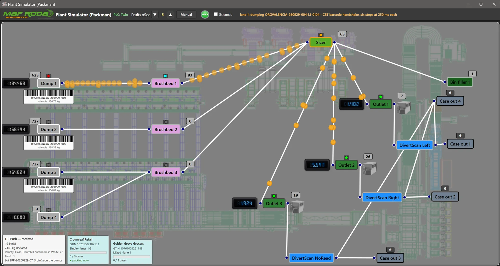
1Plant Simulator: the whole line, without hardware
A live model of a packing line, drawn over the plant’s layout. Bins are tipped at the dump stations, fruit (the orange dots) runs through the brushbeds to the sizer, and the sizer sends it to the outlets, where cases are weighed and labelled, then scanned on their way to the case-out conveyors. Fruit can also go to the bin filler.
Behind it, the PLC twin writes the same signals, in the same order, as the plant’s real PLC, so the server runs the same code and writes the same tables it does on site. The status bar shows one of those exchanges: the barcode handshake that has to finish before a bin may tip. The cards at the bottom show the lot on the dumps and the two customer orders it is being packed for.
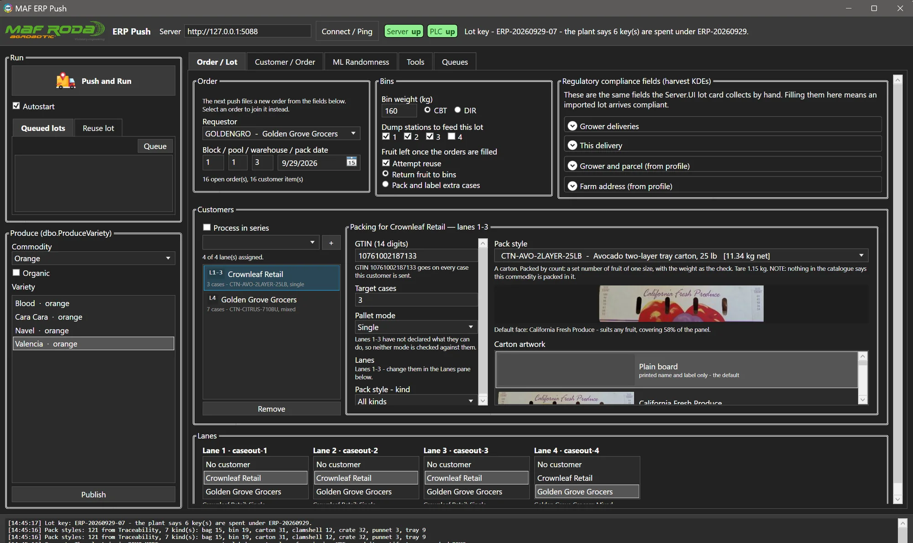
2ERP Push: where the work comes from
Plays the part of the packhouse’s ERP. It files an order and a lot the way the ERP would: the fruit and variety, the bins and which dump stations feed them, which customer each packing lane is for, and each customer’s GTIN, pack style, pallet mode and carton artwork.
The harvest key data elements FSMA 204 requires (grower, delivery, farm address) can be filled in here as well. They are the same fields an operator would otherwise enter by hand on the lot card, so an imported lot arrives already compliant. It also sets what happens to fruit left over once the orders are filled: reuse it, return it to bins, or pack and label extra cases.
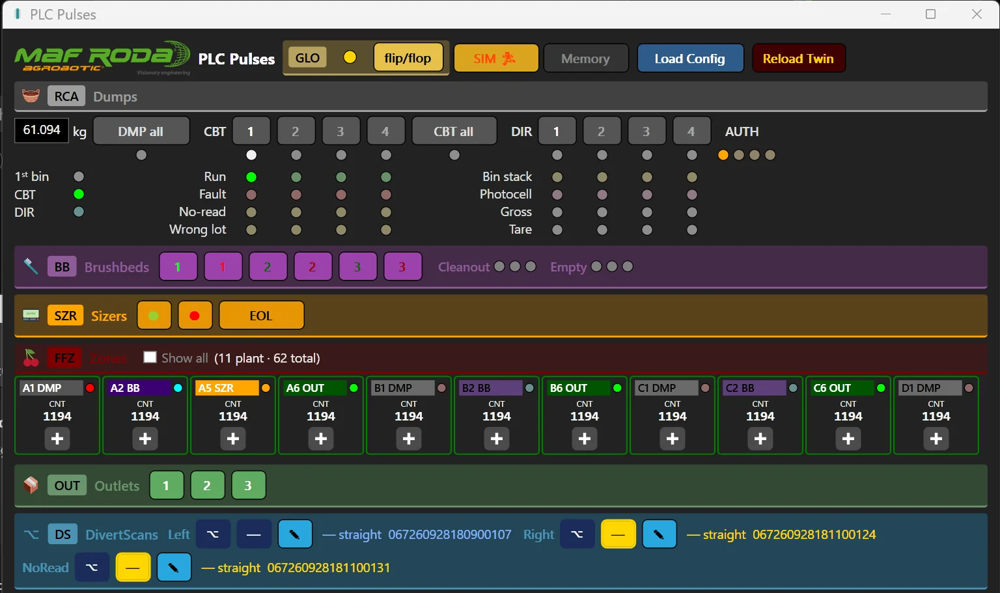
3PLC Pulses: every signal the server listens to
A panel over the PLC’s memory, built from the plant’s PLC map and grouped by machine: the dump stations (bin weight, the barcode handshake, the server’s permission to tip each bin, and run, fault, no-read and wrong-lot lamps), the brushbeds, the sizers, the fruit-flow zone counters, the outlets, and the scanners that read each case’s SSCC label on its way out.
Every lamp or number is one PLC value, and every button writes one. A single signal can be fired by hand and the server’s reaction checked on its own, which is how a line is commissioned and a fault chased down. For example: what happens when a bin is scanned for the wrong lot?
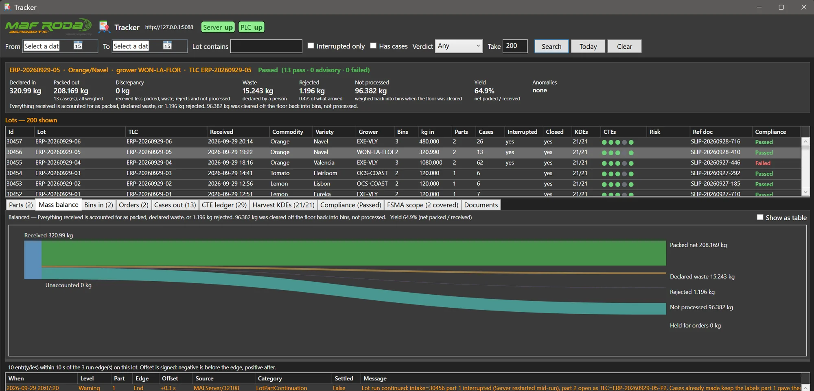
4Tracker: every kilogram accounted for
Every lot has to add up. The mass balance takes the weight received and splits it into packed net weight (each case’s weight minus its packaging), declared waste, rejected fruit, fruit weighed back into bins when the floor was cleared, and fruit held for orders. Anything left over shows as Unaccounted, and the yield is only shown once every case has been weighed. This lot has 0 kg unaccounted, at a 64.9% yield.
Its run was interrupted by a server restart, and the log line underneath shows the recovery: the lot kept running as a second part under its own lot code, and the cases already made kept the labels the first part gave them.
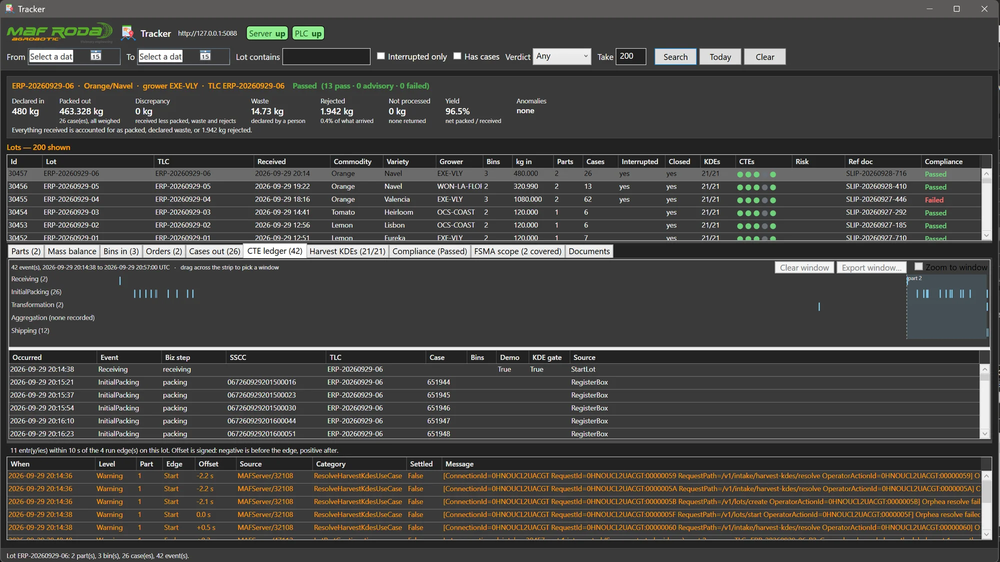
5Tracker: the FSMA 204 record for a lot
The strip lays out the lot’s critical tracking events on a timeline: receiving, the initial packing of each case, transformation and shipping. Any stretch of it can be selected and exported. The tabs hold the rest of the record: parts, bins, orders, cases, the 21 harvest KDEs, the verdict from the 28-rule compliance engine (this lot: 13 checks passed, 0 advisory, 0 failed), and the documents a regulator asks for, such as the FDA sortable spreadsheet and a GS1 EPCIS 2.0 export.
Under the ledger, the plant errors logged within 10 seconds of each start, stop or interruption of the run sit next to the events. A gap in the record can then be matched to what the software was doing at that moment.
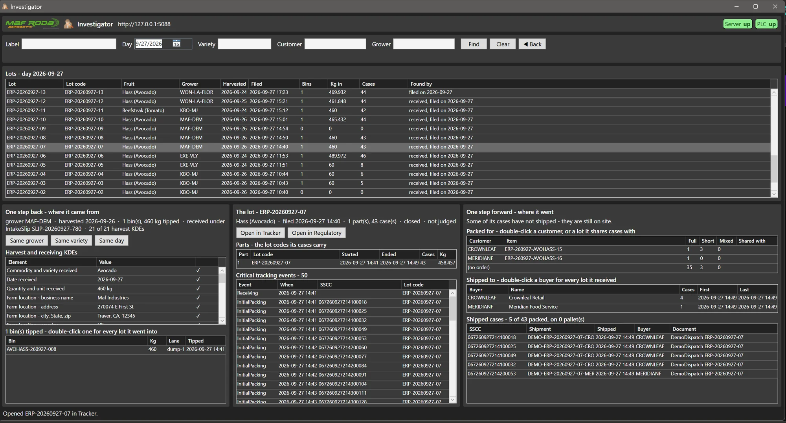
6Investigator: one step back, one step forward
The recall search. Find lots by label, day, variety, customer or grower, then pick one to see its whole chain on one screen. One step back: the grower, harvest date, the bins tipped and the harvest KDEs. The lot itself: its parts and critical tracking events. One step forward: the customers it was packed for, the buyers it shipped to, and each shipped case by SSCC, including cases still on site.
Double-clicking a bin, customer or buyer lists every other lot it touched. That is how a recall widens from one lot to everything affected.
Outlet display: in production
The part of the platform packers see. A screen over each pair of outlets shows what to pack into the next box, counts cases against the order, and turns red when something goes wrong. It runs in production at packhouse sites; a live demo runs in the browser.
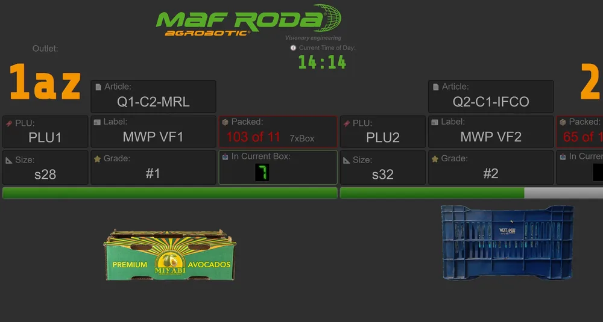
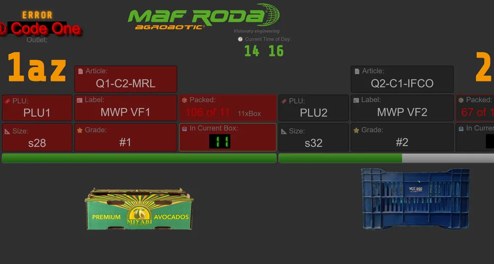
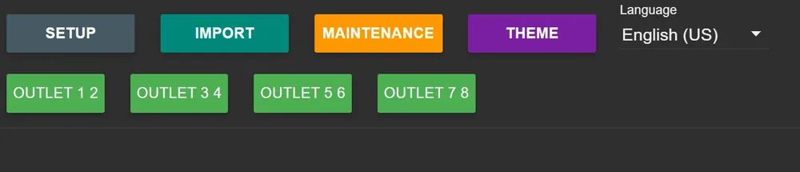
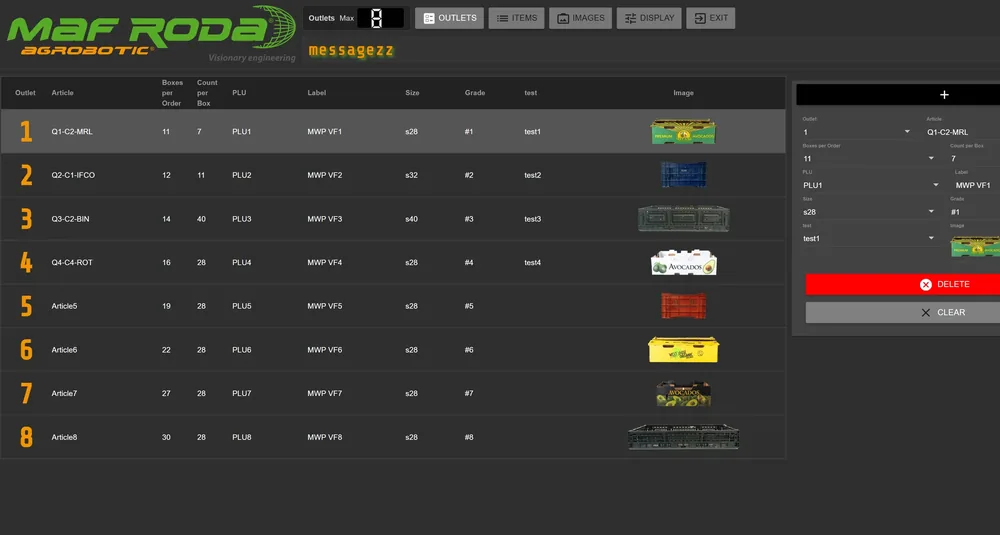
OpenCV Performance
SIMD · Buffer pre-allocation · Production sorters
Optimized OpenCV image-processing paths on production fruit sorters using SIMD intrinsics and an allocation strategy that pre-allocates buffers at startup.
Result: reduced runtime memory footprint and buffer churn during high-throughput sorting operations on the line.
Python Fleet Installer
ORPHEA Operations Framework · Python · YAML · WinRM
Designed and built the MAF Silent Install / ORPHEA operations framework: a layered Python system that provisions fruit-sorting clusters from YAML configuration.
- Multi-tier architecture: high-level modules, operation objects, and support layer (WinRM, PSRP, OpenSSH, PsExec, WMIC, netsh)
- Remote handling of large installer payloads (~10 GB), decompression, and end-to-end software deployment on Orphea, Engine, and cluster hosts
- GUI (
run_gui.py) and batch runners for field engineers; script catalog and per-operation YAML configs - Documented in Software Architecture Document, Functional Specifications, and Framework.md (installer.doc)
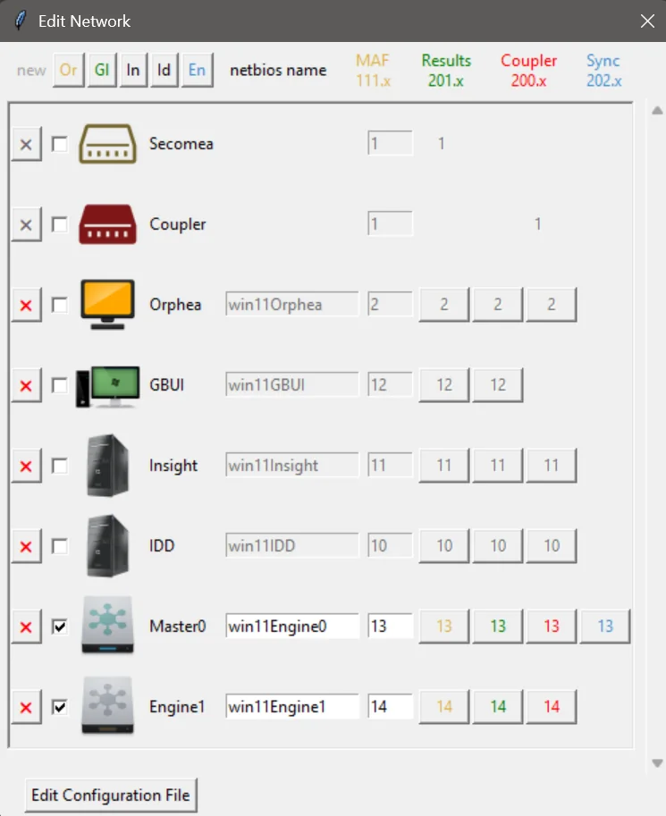
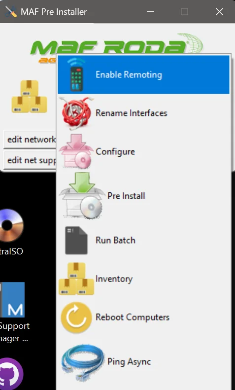
UiSettingsEditor
C# · WinForms · JSON · Figma palettes
Desktop tool for theming the outlet display above: it edits the display’s ui_settings.json, so a site can match its colors without touching code.
- Loads and saves JSON
appsettingsfor skin, outlet, and message styling - Figma-integrated color palette editor with live swatches (container, label, font, border, clock, message stroke/shadow)
- Validates combinations and syncs palette slots for article / outlet configurations
Stack: .NET WinForms, System.Text.Json, custom color-swatch controls.
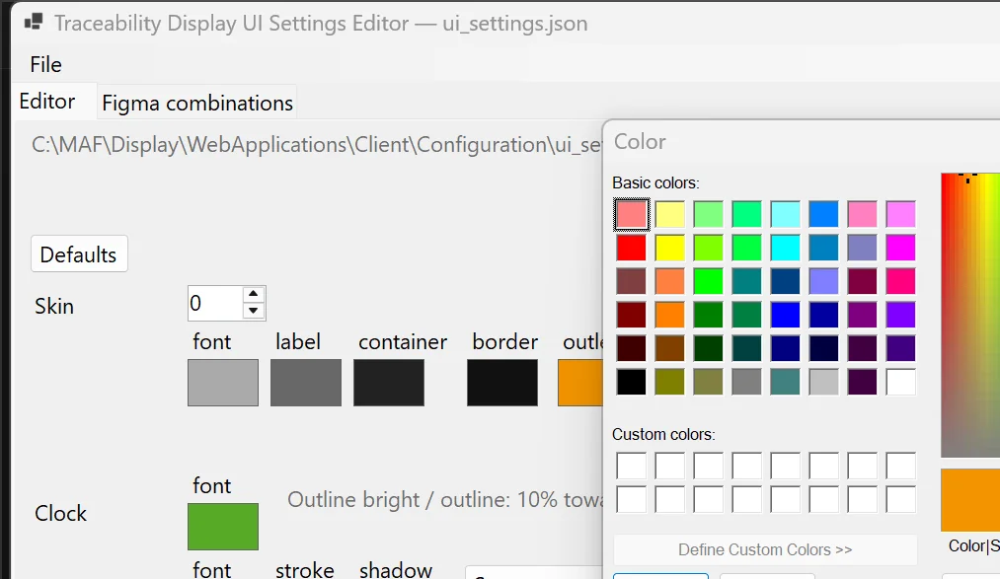
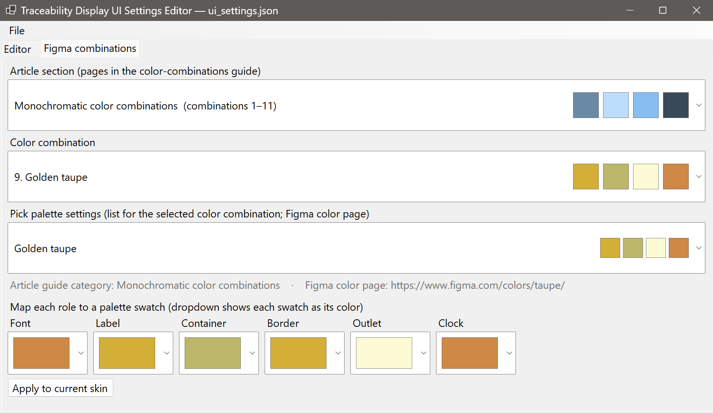
OrpheaSimulator
ASP.NET Core · REST · JSON
Sample web API supporting traceability and packing workflows — serves JSON to Angular / web front ends in the MAF ecosystem.
- ASP.NET Core minimal hosting with controllers and OpenAPI
- JSON serialization with explicit property naming for legacy client compatibility
- CORS-enabled development mode; integrates with ArticlesImg XML and web view projects
Companion to web modules (WebPacking, WebViewBinFillers, LindaVista) in the Graphics tree.
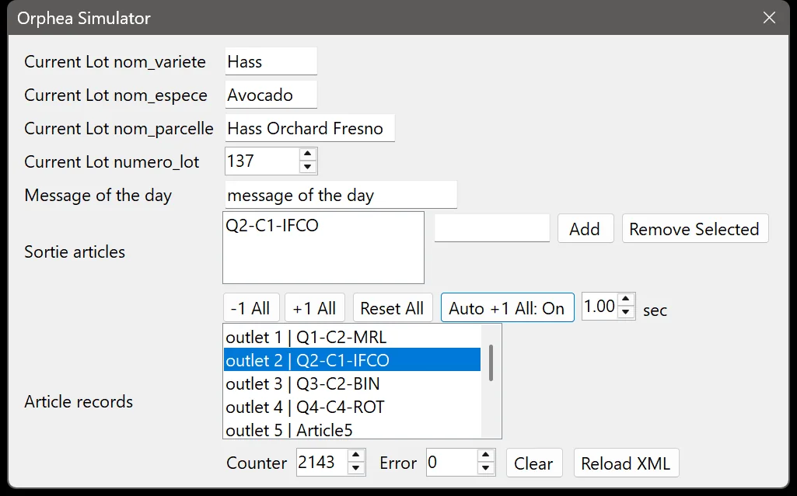
Interested in working together?